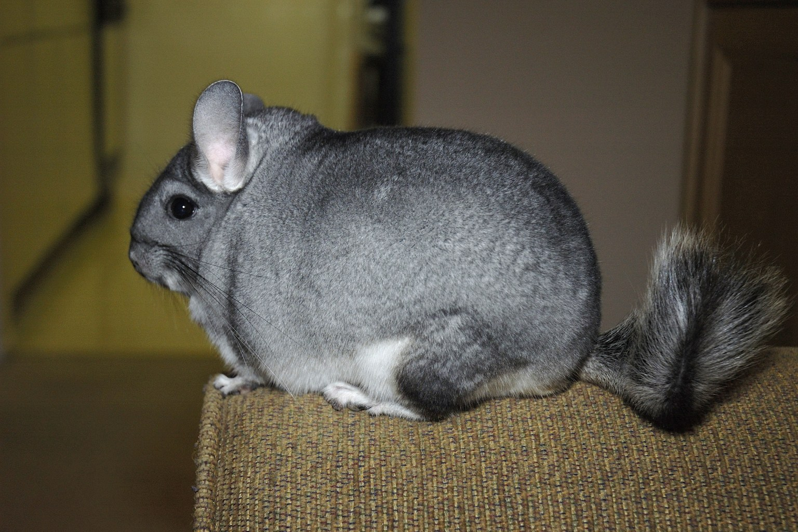

Chinchilla Dust Baths: Frequency, Humidity and the Skin Problems Overbathing Causes
Dust baths are coat care until the room passes 60 % humidity, at which point they start feeding a fungal problem instead of solving one.

Between 30 % and 50 % relative humidity is where a chinchilla's coat works, and most of the problems you will read about in the fur trade start with air sitting above 60 %. Relative humidity is the amount of water vapour in the air as a percentage of what it could hold at that temperature; get it wrong and the guard hairs over the dense undercoat stop holding their alignment, the sebaceous glands slow, and the animals begin to react to a skin they cannot keep clean. Those papers from the commercial chinchilla farms, incidentally, called bad fur "cotton coat" and a lot of it followed sealed, damp housing.
Chinchilla lanigera is a high-altitude Andean rodent, 400-500 g as an adult, that evolved in dry, cold air and cannot make its coat work in anything warm and wet. Every number in this guide traces back to that one sentence.
The evening I stopped guessing
My agouti male, Bramble, had been a little greasy behind the ears for three weeks before I did anything. I dried him twice a week in the kitchen, on a baking tray with a centimetre of Fuller's earth, and he came out looking like the same animal. Then I got a proper hygrometer and put the probe in his hutch at head height. It was reading 74 % at night and dropping to 55 % by afternoon. I had been adding dust to a room that was already too wet, and the particles simply clumped and rolled off his back. The second hygrometer I bought went outside the enclosure; the difference between inside and outside the shed was 18 %. That measurement, not the bath, told me what to do. Six weeks later he stopped bathing — a sign something is wrong, not a sign he has outgrown it — and left four neat grey impressions on the earth. I still have those six weeks written down.
Ambient humidity: what to set, and where to measure it
Target 30-50 % relative humidity in the room the cage sits in, and let the interior float with it. A digital hygrometer at 15 cm above the floor of the enclosure, plus one outside it, is the cheapest diagnostic you will ever buy. That pair is what turns "it feels damp" into a number you can act on.
Chinchillas are a dry-habitat species, so keeping the cage at 35-45 % is defensible. The common failure is the bathroom of a flat with no extraction, or a shed in an English November, where the outside probe reads 90 % and the inside reads 85 % because nothing is moving. Under those conditions no dust bath will keep the coat healthy.
Ventilation matters as much as the reading. One chinchilla exhales roughly 15-20 ml of water vapour per hour; a small plastic cage with a lid concentrates that overnight, and the morning humidity can be 15 points above the room. Leave the front open or use a barred cage. Fibre brings its own water too — timothy hay at 10-14 % moisture, stored in a closed sack, will raise the ambient humidity of a small cupboard. Keep the hay bag out of the room.
Dust bath frequency by humidity and by age
The bath is the intervention; the humidity tells you how often to use it. The 2:1 rule in the hobby — one bath per week as a baseline, increased to two or three in a low-humidity winter — comes from keepers, not controlled trials, and you should read it as a starting point, not a law. What is not contested is that overbathing strips the natural oils from the undercoat, and the skin beneath becomes red, flaky and sometimes abscessed. That matters at every stage.
- Measure first. If the enclosure sits 30-45 % with good ventilation, one bath of 10-15 minutes per week is plenty. If it is sitting 50-55 %, work on the room before the bath.
- Above 60 %, do not try to out-bathe the air. Dry the room — a dehumidifier set to 45 %, or a change of location — and reduce baths, not increase them.
- Use the right material. A sealed tub of cooled, kiln-dried Fuller's earth (silica/sand dust is not the same thing) filled to about 3-5 cm. Sieve out the solids each month; replace entirely every 6-8 weeks.
- Add fibre and coarse particles. Fine dust alone clogs the coat when the air is damp. Mix in a handful of sepiolite/calcined clay granules to keep the mixture aerated — the chinchillas roll more effectively in it and the old papers from the farms noted exactly this.
- Remove the bath after the session. A damp, soiled bath left in overnight is a humidity source, not an asset.
| Stage | Target ambient RH | Bath frequency | Duration per bath | Watched for |
|---|---|---|---|---|
| Kit (0-8 weeks, in nest with dam) | 40-50 % | None — dam keeps the coat clean | n/a | Chilling; over-wet nest material |
| Juvenile (8 weeks-6 months) | 35-50 % | 1× per week, up to 2 if air < 35 % | 10 min | Fatigue, red skin, refusal to roll |
| Adult, low-humidity room (< 40 %) | 30-40 % | 2× per week | 10-15 min | Dry, dull coat between baths |
| Adult, normal room (40-50 %) | 35-50 % | 1× per week | 10-15 min | Coat grease behind ears |
| Adult, humid room (> 55 %) | Fix the room first | 1× per week maximum | 10 min | Clumped bath, no roll, skin |
| Senior (6+ years) or post-illness | 35-45 % | 1× per week or less; assist if needed | 5-10 min | Arthritis, balance, exhaustion |
Reading the skin and coat before they fail
Greasy coat behind the ears, small yellow flakes, or a chin that leaves an oily patch on your sleeve are all early warnings, not a call for more dust. More dust at 60 % humidity makes things worse: the particles catch in the sebum, the animal scratches, and the broken guard hairs take weeks to regrow. The next step is a vet check for a bacterial skin infection or mites — those are the two things the coat problem frequently hides behind.
The other failure is the "cotton coat" the old chinchilla-fur industry wrote about, where the undercoat mats into a dense, spongy mass and the guard hairs separate into clumps. It is a coat-quality problem in commercial terms, and a welfare problem in yours. It is also not something a new bath fixes. If you see it, you have been running damp for weeks. I no longer keep chinchillas in sheds at all, and I stopped in 2018 after a winter of reading 70 % for four months.
Handle the animal during the bath session so you can feel the coat between the shoulder blades, where the guard hairs part easily. A healthy coat is dry to the touch and every hair lies flat. A damp-feeling coat in a room reading under 40 % means the bath is failing, not the air.
Where the evidence is thin: there are no clinical trials of bath frequency in pet chinchillas, only commercial fur papers and hobby consensus. The 30-50 % band is my own long experience plus what exotic vets teach, and it is a band, not a threshold. If your animal is greasy at 45 %, that is information; act on it.
Frequently asked questions
Can I use regular sand or play sand instead of dust?
No. Play sand is too coarse and too sharp: it does not lift the undercoat, it abrades it, and fine quartz dust is a respiratory irritant. Kiln-dried Fuller's earth or a dedicated chinchilla bathing dust, sieved, is the only material I would use. A bath of the wrong material is worse than no bath.
Is it dangerous if the room is 65 % humidity and I cannot dry it?
It is a welfare risk, not an emergency. In that band keep baths to once a week and focus on ventilation and airflow first, and get the animal to a drier room if you can. Persistently damp fur predisposes to skin infections and to the coat matting that is difficult to reverse.
My chinchilla has stopped bathing — is that ageing?
Sometimes, but always check for another cause first: a change in the bath material, a shallow tray that is too small to roll in, arthritis in older animals, or a skin problem. A healthy adult should roll within a minute or two of being offered a fresh bath. A refusal is a symptom worth writing down.
What we actually use
One piece of equipment that do most of the work in a Chinchilla setup. Nothing here is here because a brand asked.
-
Check price on AmazonHabitat & Decor
Digital Hygrometer & Thermometer, 2-pack
Ambient humidity above 60 % is what turns a dust bath from coat care into a fungal risk.
Typical price $16–28
Links open Amazon in a new tab. We do not set or track prices.
Affiliate disclosure. As an Amazon Associate, we earn from qualifying purchases. Every card in this guide is an affiliate link — it costs you nothing, and we only list gear we have run in our own enclosures.